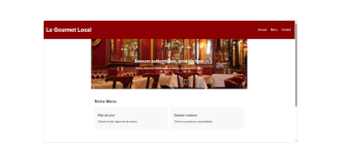
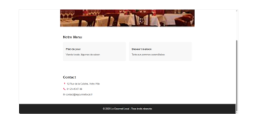

Présentation du projet
Ce projet est un site vitrine complet pour un restaurant local, comprenant une page d’accueil, une carte des menus, des horaires, une galerie photos et un formulaire de réservation.

Objectifs pédagogiques
- Créer un site vitrine complet et responsive
- Utiliser CSS Grid pour organiser la galerie
- Améliorer la cohérence visuelle avec des variables CSS
- Optimiser les images pour de bonnes performances
- Intégrer un formulaire accessible avec labels et aria
Technologies utilisées
HTML5
CSS3
UX / UI Design
Galerie du projet



Conclusion
Ce projet m’a permis de travailler sur la présentation visuelle, l’optimisation des images et la mise en place d’un design cohérent pour un site professionnel.
Retour aux projets